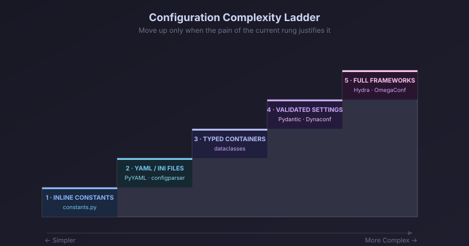
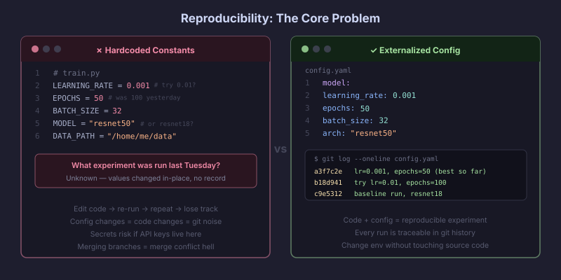
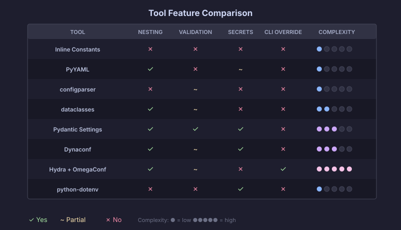
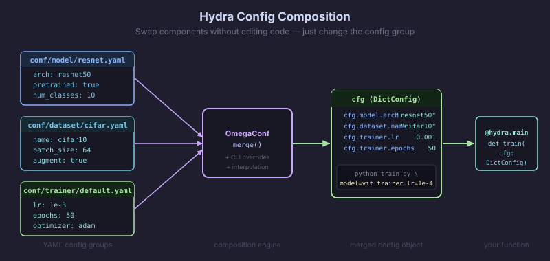
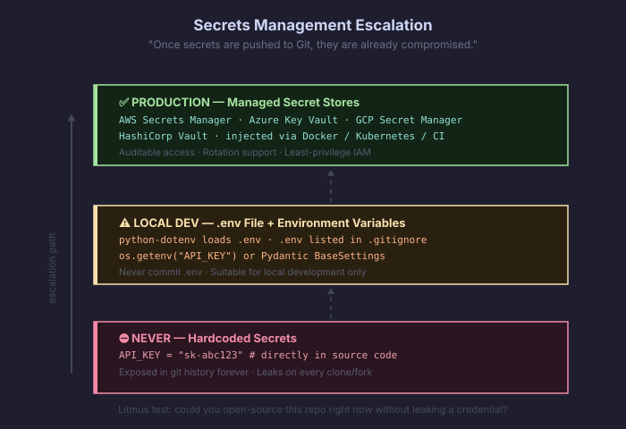
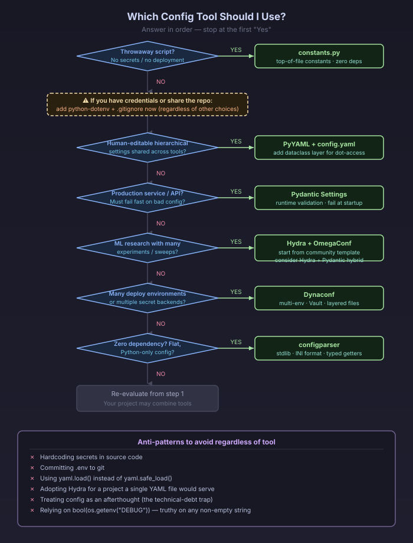

Configuration Management in Data Science: A Practitioner’s Guide
There is no single “best” tool — the right choice scales with project complexity: hardcoded constants and a single
config.yaml(PyYAML) cover most solo notebooks and small scripts; Pydantic Settings is the best default for production ML services that need validation; and Hydra + OmegaConf is the de facto standard for multi-experiment deep-learning research, despite a steep learning curve.Secrets are a separate concern from configuration. Non-secret config (hyperparameters, paths, flags) belongs in version-controlled files; secrets (API keys, DB passwords) belong in environment variables,
.envfiles excluded from git, or a dedicated secrets manager (Vault, AWS Secrets Manager). Most config tools delegate secrets handling; only Dynaconf and Pydantic Settings integrate it natively.The most common practitioner complaints: Hydra is “overkill for solo projects” and confusingly built on the less-documented OmegaConf; PyYAML has the infamous “Norway problem”; configparser can’t nest and returns everything as strings; and hardcoding silently destroys reproducibility.
Key Findings
- Configuration management means separating the values that control your code from the code itself — and in data science it is the difference between reproducible experiments and an untrackable mess of edited-in-place hyperparameters.
- Tools fall on a complexity ladder: inline constants → YAML/INI files → typed containers (dataclasses, Pydantic) → full frameworks (Dynaconf, Hydra/OmegaConf). Move up the ladder only when the pain of the current rung justifies it.
- Hydra dominates the ML research niche — 10.3k stars on the facebookresearch/hydra repo, and
hydra-corelogged 15,381,160 downloads in the last month per pypistats.org — largely through the community PyTorch Lightning + Hydra templates (PyTorch Lightning itself logged 10,792,750 downloads last month per pypistats.org, a popularity signal for that niche). Meanwhile Pydantic (27K stars; pypistats.org shows pydantic at 1,028,307,353 downloads in the last month, and Pydantic’s own June 2026 post “Pydantic Just Hit 10 Billion Downloads” cites “over 550M downloads per month”) dominates production/API-adjacent ML. - A recurring expert recommendation is the hybrid pattern: use Hydra/OmegaConf or YAML for composition and CLI overrides, then validate the merged config with Pydantic for type safety.
- Secrets management becomes necessary the moment code is shared, committed to git, or deployed — the “litmus test” from the Twelve-Factor App: could you open-source your repo right now without leaking a credential?

Details
What configuration management is
Configuration is everything that controls how your code runs but isn’t the logic itself: file paths, model hyperparameters, database URLs, API ports, feature flags, and credentials. Configuration management is the discipline of keeping those values separate from, and external to, your source code, so they can be changed, tracked, and varied across environments without editing (and re-testing) the code.
The Twelve-Factor App methodology frames the canonical principle: “Config varies substantially across deploys, code does not,” and a violation is “store[ing] config as constants in the code.” Its litmus test is whether your codebase “could be made open source at any moment, without compromising any credentials.”
In data science specifically, configuration spans three rough buckets (per Wencong Yang’s “From Data Science to Production”): data config (periods, paths, splits), model config (hyperparameters, architecture), and service config (API ports, replicas). A poor config system, as one ML config paper (confr) notes, “can lead to repetitive code that is hard to maintain, understand, and brittle due to insufficient configuration validation logic.”
Why it matters to data scientists specifically
Google’s famous “Hidden Technical Debt in Machine Learning Systems” paper warns: “both researchers and engineers may treat configuration (and extension of configuration) as an afterthought. Indeed, verification or testing of configurations may not even be seen as important.” This is the core “why should I care.”
Concretely:
Reproducibility. The principle traces to Karl Popper, The Logic of Scientific Discovery (1959): “non-reproducible single occurrences are of no significance to science.” The ML community invokes it constantly as the adage “if it isn’t reproducible, it’s not science.” Davis David (Analytics Vidhya) describes the anti-pattern directly: practitioners “change the values of the different parameters directly from the source code and run the experiment again and again… you can lose track of the different experiments you have done previously.” A code-version + config-file pair should uniquely determine a run’s behavior.

Hardcoded constants (left) vs. externalized config with git history (right). Experiment velocity. Jesper Dramsch reports that Hydra configs “sped up my machine learning development workflow” by letting him “pass the config and simply add new config settings” instead of “adjusting the function signature for every new part.”
Deployment portability. Wencong Yang notes hardcoding “may work for a quick demo, but it poses two challenges for models in production”: continuous hyperparameter tuning and easy deployment “in different environments.”
Collaboration & safety. The moment your notebook becomes a shared repo, hardcoded credentials become a liability and edited-in-place constants become merge-conflict and reproducibility hazards.
A Survey of approaches

1. Constants at the top of a file (inline hardcoding)
Overview. Define values as ALL-CAPS constants at the top of a module or in a dedicated constants.py. The simplest possible step above scattering magic numbers through the code.
# config.py
TEST_RATIO = 0.2
LEARNING_RATE = 3e-4
DATA_PATH = "data/raw/train.csv"Pros. Zero dependencies, zero learning curve, centralized, easy to read. IBM’s Data Science Best Practices calls constants “the preferred approach for configuration that is hardly ever changed.” Cons. No separation of config from code (a Twelve-Factor violation if it varies across deploys); changing config means a code change and commit; no validation; Python “doesn’t have a hard-enforced visibility concept,” so a “constant” can be mutated accidentally. Best for. Tiny solo scripts, notebooks, throwaway prototypes, and genuinely fixed values (e.g., number of RGB channels = 3). Never for secrets — IBM is explicit: “it must not be used for secrets!” Secrets. Forbidden. Hardcoded secrets are the canonical security anti-pattern.
2. config.yaml + PyYAML
Overview. Store config in a human-readable YAML file; load with PyYAML into a Python dict. The most common file-based pattern in ML tutorials.
import yaml
with open("config.yaml") as f:
config = yaml.safe_load(f) # always safe_load
lr = config["model"]["learning_rate"]Pros. Highly readable, supports nesting and lists, language-agnostic, near-universal in ML. Easy for non-developers to edit. Cons. Several well-documented footguns:
yaml.load()withoutsafe_loadcan execute arbitrary code — always useyaml.safe_load.- The “Norway problem”: under YAML 1.1 (which PyYAML still follows), the bare scalar
NOparses to booleanFalse, as doyes/no/on/off/y/n. Country codes, and the variable namesn/ycommon in DS code, silently become booleans. Version numbers like9.3become floats. Fix: quote ambiguous strings, or use StrictYAML. - Whitespace/indentation sensitivity; dict access (
config["a"]["b"]) is stringly-typed and refactor-unfriendly; no validation or type enforcement out of the box. Best for. Most small-to-medium DS projects; sharing configs across tools/languages; any project where humans hand-edit hierarchical settings. Often paired withpython-boxfor dot-access or a dataclass/Pydantic layer for validation. Secrets. YAML files can hold secrets but then must be git-ignored; better to keep secrets out and inject via env vars.
3. configparser / .ini files
Overview. Python’s standard-library parser for INI-format files (sections of key=value). Zero dependencies.
from configparser import ConfigParser
config = ConfigParser()
config.read("app.ini")
port = config.getint("server", "port") # explicit type getterPros. Built into Python (no install), simple, human-readable, stable, comments supported. One Medium author calls it “a hidden gem” most developers don’t know exists. Cons. Everything is a string by default — you must call getint/getfloat/getboolean manually. No native nested sections (Guido van Rossum deliberately resisted nesting to discourage mixing config with data). No lists/arrays. Lowercases keys unless you override optionxform. read() silently does nothing if the file is missing. Best for. Small, flat, Python-only configs; CLI tools; legacy systems; “zero-dependency” requirements. Falls apart with hierarchical ML configs. Secrets. No special support; same git-ignore caveats as any file.
4. Python dataclasses as config containers
Overview. Use @dataclass (stdlib, 3.7+) to hold config as typed attributes, giving dot-access and IDE autocompletion. Often loaded from a dict/YAML via from_dict or **unpacking.
from dataclasses import dataclass
@dataclass
class ModelConfig:
learning_rate: float = 3e-4
epochs: int = 10
optimizer: str = "adam"Pros. No third-party dependency, type hints, config.model.lr instead of error-prone config["model"]["lr"], testable, less boilerplate than regular classes. Alexandra Zaharia argues config should be handled “through identifiers rather than strings.” Cons. Type hints are not enforced at runtime (a dataclass won’t reject epochs="ten"); no built-in file loading, validation, or env-var integration — you build the glue yourself. “Cannot perform complex constructor initialization” cleanly. Extra keys in a source dict raise TypeError. Best for. Projects wanting structure and type-hints without a dependency; a clean schema layer on top of YAML/INI. A natural stepping stone to Pydantic when you need enforced validation. Secrets. No native support; secrets injected via env vars at construction time.
5. Pydantic / pydantic-settings
Overview. Pydantic is a runtime validation library using type annotations; pydantic-settings (its BaseSettings class) adds loading from env vars, .env files, secrets directories, and more, with precedence rules.
from pydantic_settings import BaseSettings, SettingsConfigDict
class Settings(BaseSettings):
model_config = SettingsConfigDict(env_file=".env")
db_url: str
learning_rate: float = 3e-4
api_key: str # required; errors at startup if missing
settings = Settings()Pros. Runtime type enforcement and validation — “the service refuses to start” on bad config, turning “mysterious behavior into clear startup errors.” Rich constrained types (PostgresDsn, RedisDsn, EmailStr), automatic env-var reading, .env support, defaults, nested models. The recommended settings approach in FastAPI. Massive adoption (pydantic at 1,028,307,353 downloads last month per pypistats.org) means a strong ecosystem and autocompletion. Cons. “Requires you to write a lot of code if you want features like having different environments, reading from sources that aren’t ENV vars, writing to files.” The “auto ENV var reading breaks down for pydantic if you do nested schemas” (needs env_nested_delimiter). It validates but doesn’t compose/merge configs across files the way Hydra does — practitioners note it lacks expression-based interpolation. Can be “verbose for simple projects.” Best for. Production ML services and APIs; anything that must fail fast on misconfiguration; projects already using Pydantic/FastAPI. The validation layer in a Hydra+Pydantic hybrid. Secrets. Best-in-class delegation/integration. Reads OS env vars and .env (env always overrides .env), supports a secrets_dir for Docker/Kubernetes file-based secrets, and has source classes for AWS Secrets Manager and Google Cloud Secret Manager. Recommended pattern (Redowan Delowar): non-sensitive vars in .env (committed or not), sensitive ones injected as shell env vars.
6. Dynaconf
Overview. A layered settings manager that loads and merges config from multiple file formats (TOML, YAML, JSON, INI, .py) and env vars, with first-class multi-environment support and Vault/Redis secret backends.
from dynaconf import Dynaconf
settings = Dynaconf(
settings_files=["settings.toml", ".secrets.toml"],
environments=True, # [development], [production] sections
envvar_prefix="MYAPP",
)
print(settings.database.host)Pros. Handles dev/staging/prod in a single file via sections; loads from many sources with defined precedence; “lazy loading”; reads secrets from HashiCorp Vault and Redis; env-var overrides; Jinja/format-string interpolation. Strong for “config sprawl” in microservices. (4.3k stars; ~3.0M downloads/month per pypistats.org.) Cons. No predefined schema — “you don’t predefine the structure of your settings in advance,” which makes defaults and validators “a bit more tedious” and is “not as inherently type-safe as Pydantic for direct access.” Steeper learning curve than simple tools. Default DYNACONF_ env prefix “may lead to conflicts.” Documented performance issues: a maintainer-filed issue (#713) notes settings.setenv() “takes 0.2 seconds” each call and v3.1.5 ran “nearly 3 times slower” than v2.2.3 on a large (~2,500-line) settings file. Best for. Multi-environment apps and microservices; teams wanting one tool for config + secrets across many formats; data-engineering pipelines with many connectors. Secrets. Native. Encrypted values, Vault and Redis integration, separate .secrets.toml convention.
7. Hydra (Meta/FAIR)
Overview. A framework (built on OmegaConf) for composing hierarchical configs from multiple YAML files and overriding them from the command line, with automatic per-run output directories and multi-run parameter sweeps. Created by Facebook/Meta Research; the dominant config tool in deep-learning research.
import hydra
from omegaconf import DictConfig
@hydra.main(config_path="conf", config_name="config", version_base=None)
def train(cfg: DictConfig):
print(cfg.model.lr) # dot-access
# override at CLI: python train.py model.lr=1e-3 --multirun model.lr=1e-3,1e-4
Pros. Config composition via config groups (swap model=resnet or dataset=v2); powerful CLI overrides distinguishing override (key=val) from add (+key=val); --multirun sweeps across hyperparameters; automatic timestamped output dir per run capturing exact params (huge for reproducibility); strong ML ecosystem (the PyTorch Lightning + Hydra templates; Lightning itself logged 10,792,750 downloads last month per pypistats.org). Omry Yadan’s “fresh look at configuration for ML” is a foundational reference. Cons. The most-criticized tool here. Dan MacKinlay: Hydra is “at a mind-melting intersection of opinionation and flexibility… a profusion of quasi-OOP inheritance patterns,” and “you end up needing to know that it is built upon OmegaConf, which is less maintained and worse documented than Hydra” — “these days I use simpler systems… because hydra made me confused.” Docs “target experienced users, not new users.” Validation is “offloaded largely to application” (no rich runtime validation without Pydantic). Lazy interpolation can resolve at the wrong time (e.g., now: timestamps differing between training and inference). The official PyPI package is hydra-core (the bare hydra is unrelated). Widely called overkill for solo or simple projects. Best for. Research with many experiments/hyperparameter sweeps; deep learning; teams needing reproducible, composable configs and per-run artifact tracking. The community consensus (lightning-hydra-template authors) is explicit: it’s “a fast experimentation tool,” “not fitted to be a production/deployment environment.” Secrets. Delegates entirely — no native secrets management. Use env-var interpolation (${oc.env:VAR}) or pair with python-dotenv/a secrets manager.
8. OmegaConf
Overview. The hierarchical config engine underneath Hydra, usable standalone. Merges configs from YAML, dataclasses, and CLI into one object with a consistent API, and supports variable interpolation. (2.4k stars; omegaconf logged 32,488,956 downloads in the last month per pypistats.org.)
from omegaconf import OmegaConf
base = OmegaConf.load("config.yaml")
cli = OmegaConf.from_cli()
cfg = OmegaConf.merge(base, cli)
print(cfg.model.lr) # supports ${...} interpolationPros. Variable interpolation (${train.num_classes} referenced elsewhere); merges multiple sources cleanly; dot-access; optional type-checking via structured configs (dataclasses); the serialization workhorse (OmegaConf.to_container(cfg, resolve=True)) loggers expect. Cons. “Less maintained and worse documented than Hydra” (MacKinlay); interpolation is lazy, which can bite you (resolve early before saving checkpoints); the ANTLR dependency for interpolation grammar is heavy enough that alternatives like upsilonconf exist specifically to avoid it; standalone it lacks Hydra’s CLI/composition conveniences. Best for. When you want interpolation and merging without Hydra’s full framework; as the layer you reach into when Hydra’s abstractions leak; structured-config type checking. Secrets. Supports ${oc.env:VAR} env interpolation; otherwise delegates.
9. python-dotenv / .env files
Overview. Loads key-value pairs from a .env file into environment variables, which you then read with os.getenv. The standard local-development secrets pattern. (8.8k stars; ~595.7M downloads/month per pypistats.org.)
from dotenv import load_dotenv
import os
load_dotenv()
api_key = os.getenv("API_KEY")
db_url = os.getenv("DATABASE_URL")Pros. Dead simple; keeps secrets out of code; aligns with Twelve-Factor; near-universal; supports per-environment files (.env.development, .env.production). The standard way to load AWS/GCP keys, DB creds in DS notebooks. Cons. No validation or typing — os.getenv returns strings (bool(os.getenv("DEBUG")) is a classic bug since any non-empty string is truthy). Flat namespace only. It is a secrets/env loader, not a full config system — you’ll outgrow it for structured config. .env must never be committed (add to .gitignore). Best for. Local development secrets and environment-specific values; the secrets half of a “PyYAML/Pydantic for config + dotenv for secrets” split. Production teams inject env vars via Docker/K8s/CI rather than shipping .env files. Secrets. This is the entry-level secrets tool. But “in real deployments, .env files are not used — environment variables are injected by Docker, Kubernetes, CI/CD” and secrets live in AWS Secrets Manager / Azure Key Vault / Vault. pydantic-settings layers validation on top of the same .env.
How secrets fit in (cross-cutting)
- Config vs. secrets are different problems. Non-secret config (hyperparameters, paths, flags) is meant to be versioned and shared. Secrets (passwords, API keys, tokens) must never enter git. Most config files can technically hold secrets but shouldn’t.
- When is secrets management necessary? Per GitGuardian and Twelve-Factor: as soon as code is shared with a team, committed to a repo, or deployed. For a purely local solo notebook with no credentials, it isn’t. The litmus test: could you open-source the repo right now safely?
- The escalation ladder for secrets: hardcoding (never) → environment variables /
.env(local dev) → cloud secret managers (AWS Secrets Manager, Azure Key Vault, GCP Secret Manager) or HashiCorp Vault (production). “Once secrets are pushed to Git, they are already compromised” — rotate immediately. - Tool integration: dotenv (load only), Pydantic Settings (env +
.env+ secrets_dir + cloud manager sources), Dynaconf (Vault/Redis + encrypted values) integrate secrets natively. Hydra, OmegaConf, PyYAML, configparser, dataclasses, and constants delegate secrets to env vars or an external manager.

A decision framework
Ask these questions in order:
- Is it a throwaway notebook/script with no secrets and no deployment? → Constants at the top of the file (or a small
config.py). Don’t over-engineer. - Do you have credentials, or share the repo? → Add python-dotenv +
.gitignorefor secrets immediately, regardless of what else you use. - Do humans hand-edit hierarchical settings, shared across tools? → config.yaml + PyYAML (with
safe_load, and quote ambiguous strings). Add a dataclass layer if you want dot-access/structure without a dependency. - Is this going to production / an API, and must fail fast on bad config? → Pydantic Settings. It’s the best default for production ML services and validation-critical pipelines.
- Do you run many experiments / hyperparameter sweeps in research DL? → Hydra + OmegaConf, ideally from a community template. Accept the learning curve; reach for the hybrid (Hydra composes, Pydantic validates) if you need strict validation.
- Many deployment environments / microservices / multiple secret backends? → Dynaconf (or Pydantic Settings + a secrets manager).
- Zero-dependency, flat, Python-only config? → configparser.

Benchmarks that should change your choice:
- If you find yourself editing constants to run a different experiment → move to files (step 3).
- If a string-vs-int config bug reaches production → add validation (Pydantic, step 4).
- If you’re copy-pasting whole YAML files to vary one component, or manually looping over hyperparameter combinations → adopt Hydra composition/multirun (step 5).
- If you maintain more than 2-3 environment variants in parallel → Dynaconf or Pydantic environments (step 6).
- If your config exceeds a few hundred lines or several thousand across environments → watch Dynaconf performance; consider splitting/composition.
Anti-patterns to avoid regardless of tool: hardcoding secrets; committing .env; using yaml.load instead of safe_load; treating config as an afterthought (the technical-debt trap); and over-adopting Hydra for a solo project that a single YAML file would serve.
5. Further reading
- Omry Yadan (Hydra author), “Hydra — A fresh look at configuration for Machine Learning projects” (PyTorch/Medium) — the canonical Hydra rationale.
- Jesper Dramsch, “How Hydra configs have sped up my machine learning development workflow” — pragmatic ML walkthrough with gotchas.
- Dan MacKinlay, “Hydra for configuring and tracking machine learning experiments” — the best critical/skeptical take.
- “Pydra: Pydantic and Hydra for configuration management of model training experiments” (Towards Data Science) — the hybrid pattern.
- Redowan Delowar (rednafi), “Pedantic configuration management with Pydantic” — env/secret separation patterns.
- Wencong Yang, “From Data Science to Production: Configuration Management for ML Code” (Medium) — data/model/service config framing.
- “The Twelve-Factor App,” Factor III: Config (12factor.net) — the foundational principle.
- GitGuardian, “Python Secrets Management: Best Practices for Secure Code” — secrets escalation ladder.
- Ruud van Asseldonk, “The YAML document from hell” — every YAML footgun.
- Leapcell, “Pydantic BaseSettings vs. Dynaconf” — head-to-head decision guidance.
- The lightning-hydra-template (ashleve, GitHub) — reference ML project structure with honest “why you shouldn’t use it” notes.
References
- IBM Data Science Best Practices — Configuration Management (constants, files, env vars; “must not be used for secrets!”).
- Wencong Yang, “From Data Science to Production: Configuration Management for ML Code,” Medium (data/model/service buckets; hardcoding’s two production challenges).
- Leo Liu, “Best Practices for Configuration Management in Python Data Analysis Projects,” CodeX/Medium (security/flexibility/scalability/maintainability rationale; Pydantic Settings vs BaseModel; vault retrieval).
- “As a Novice: I Learned That Using Configuration Files… Makes Development More Efficient,” Towards Data Science (YAML for ML scoring; hardcoding comparison).
- Davis David, “How to Write Configuration Files in Your Machine Learning Project,” Analytics Vidhya (changing params in source code anti-pattern; PyYAML/safe_load).
- Krystian Safjan, “Python — Configuration Management” (survey of Hydra, Dynaconf, OmegaConf, ConfigParser, Cerberus, Pydantic).
- “Configuration management for model training experiments using Pydantic and Hydra” (Pydra), Towards Data Science (Hydra strengths/weaknesses; validation offloaded to app; interpolation gaps).
- gaohongnan, “Pydantic And Hydra” (Hydra 1.1
_self_composition; passing Hydra config to Pydantic). - Leapcell, “Pydantic BaseSettings vs. Dynaconf” (when to choose each; Dynaconf encryption; type-safety tradeoff).
- jsschools, “6 Essential Python Configuration Management Libraries” (per-tool recommendations; Hydra for scientific/research apps).
- Dan MacKinlay, “Hydra for configuring and tracking machine learning experiments” (mind-melting opinionation; OmegaConf less maintained; docs target experienced users; duplication of effort).
- Jesper Dramsch, “How Hydra configs have sped up my ML workflow” (velocity benefits; lazy-resolution timestamp gotcha; OmegaConf.to_container for loggers).
- Decoding ML / “Mastering ML Configurations by leveraging OmegaConf and Hydra” (multi-run example; type validation use cases).
- Typed Settings docs & Stefan Scherfke blog (Dynaconf no-predefined-schema philosophy; DYNACONF_ prefix conflicts; Vault/Redis; single-file environments).
- Dynaconf GitHub issue #713 (setenv 0.2s each; v3.1.5 ~3x slower than v2.2.3 on ~2,500-line settings).
- Dynaconf Discussion #608 (Pydantic BaseSettings boilerplate; nested-schema env reading breaks; community demand for schema validation).
- rednafi (Redowan Delowar), “Pedantic configuration management with Pydantic” (env overrides .env; sensitive vars in shell env, insensitive in .env).
- CodeCut, “Pydantic-settings: Type-Safe Config Management” (string-typing bugs in os.getenv; constrained DSN types).
- Towards Data Science, “Manage Environment Variables with Pydantic” (validation aliases; .env workflow).
- Alexandra Zaharia, “Python configuration and data classes” (identifiers over strings; configparser encapsulation).
- dev.to/eblocha, “Using Dataclasses for Configuration in Python” (dict access error-prone; testability).
- Naren Yellavula, “When to use Python Data classes” (dataclass vs regular class pros/cons; no complex constructor logic).
- Opensource.com, “Use Python to parse configuration files” (INI/JSON/YAML/TOML tradeoffs; configparser + PyYAML).
- Honeybadger, “INI vs. YAML” & pythontutorials.net “ConfigObj vs ConfigParser vs YAML” (configparser strings, no nesting; YAML safe_load; whitespace).
- Medium/The Pythonworld, “Most Developers Don’t Know Python Has a Built-In Config File Parser” (configparser “hidden gem”; best for simple/flat).
- Python Wiki ConfigParserShootout & python.org docs (Guido’s anti-nesting stance; string storage; optionxform lowercasing).
- Ruud van Asseldonk, “The YAML document from hell,” Posit “In Defense of YAML,” HitchDev StrictYAML, bram.us “YAML: The Norway Problem” (Norway problem; YAML 1.1 vs 1.2; arbitrary code execution via tags).
- The Twelve-Factor App, Factor III (12factor.net) (config-in-code violation; open-source litmus test; env vars).
- Karl Popper, The Logic of Scientific Discovery (1959) (“non-reproducible single occurrences are of no significance to science”); Daily Dose of DS, “Ensuring Reproducibility in Machine Learning Systems” (the adage in ML practice).
- Google, “Hidden Technical Debt in Machine Learning Systems” (config as afterthought quote), via Julien Beaulieu’s flexible config system post.
- GitGuardian, “Python Secrets Management” and DZone “How To Handle Secrets in Python” (.env, env vars, cloud managers, Vault/hvac; secrets module vs random).
- GitHub SajixInc Discussion #58 & dev.to (python-dotenv best practices; never commit; per-environment .env files).
- Medium/Vivek, “Managing Secrets in Real-World Production Python Projects” (.env for local only; injected via Docker/K8s/CI in production).
- pydantic-settings docs (secrets_dir for Docker/K8s; AWS & GCP Secret Manager sources; source precedence).
- lightning-hydra-template (ashleve) & “yet another lightning hydra template” (gorodnitskiy), KDnuggets Hydra tutorial, Appsilon (adoption; “not for production”; per-run output dirs; known breakages).
- Adoption metrics (GitHub repo pages and pypistats.org, observed June 10, 2026): Hydra 10.3k stars, hydra-core 15,381,160 downloads last month; OmegaConf 2.4k stars, omegaconf 32,488,956/month; Dynaconf 4.3k stars, ~3.0M/month; Pydantic 27K stars, pydantic 1,028,307,353/month (Pydantic’s June 2026 “10 Billion Downloads” post cites “over 550M/month”); pydantic-settings 1.4k stars, ~91.9M/month; python-dotenv 8.8k stars, ~595.7M/month; PyYAML 2.9k stars, ~1.09B/month; PyTorch Lightning 10,792,750/month.
Recommendations
- Start at the lowest rung that fits. For a solo notebook, a
config.pyof constants plus python-dotenv for any keys is enough. Don’t adopt Hydra “because ML papers use it.” - Add python-dotenv +
.gitignorethe instant you touch a credential. This is the single highest-leverage habit for safety. Rotate any secret that ever hit git. - For production ML services/APIs, default to Pydantic Settings. The fail-fast validation pays for itself the first time it catches a bad env var at startup instead of mid-pipeline.
- For research with sweeps, adopt Hydra via a community template (e.g., lightning-hydra-template) rather than from scratch — practitioners universally report the blank-page problem. Resolve configs early to avoid lazy-interpolation bugs, and consider the Hydra-composes/Pydantic-validates hybrid.
- For many environments or secret backends, evaluate Dynaconf, but benchmark if your settings files are large (thousands of lines) given documented performance regressions.
- Always
yaml.safe_load, quote ambiguous YAML scalars, and use configparser’s typed getters. These eliminate the most common silent-corruption bugs. - Push secrets to a managed store (Vault / cloud secret manager) before production;
.envis for local dev only.
Caveats
- Adoption numbers are point-in-time and noisy. GitHub stars and PyPI downloads (observed June 10, 2026) overstate real human usage — PyPI counts include CI/mirror/transitive-dependency traffic, which inflates low-level libraries like PyYAML, python-dotenv, and Pydantic disproportionately. Treat them as rough popularity signals, not usage censuses.
- Several sources are vendor or SEO content (e.g., tool-comparison blogs, a Dynaconf “2025 ML” post making unsourced quantitative claims like “62% of Fortune 500 ML teams” and “reduces failures by 75%”). I have deliberately excluded those unverifiable statistics; treat any such precise adoption percentages with skepticism.
- The YAML “Norway problem” is version-dependent. It stems from YAML 1.1 implicit typing; YAML 1.2’s Core Schema fixes it, but PyYAML still defaults to 1.1 behavior, so the footgun remains live in most Python code today.
- Hydra criticism is partly subjective. The same flexibility one practitioner finds “mind-melting” another finds essential for sweeps; the strong consensus is narrower: it shines for research experimentation and is poorly suited to production deployment and data-pipeline orchestration.
- Tool boundaries blur. Many real projects combine tools (YAML + dataclass; Hydra + Pydantic; PyYAML config + dotenv secrets), so “choosing one” is often choosing a primary plus a secrets strategy.
- Experiment-tracking tools (MLflow, Weights & Biases) overlap conceptually with config management but were intentionally excluded from this guide per scope.